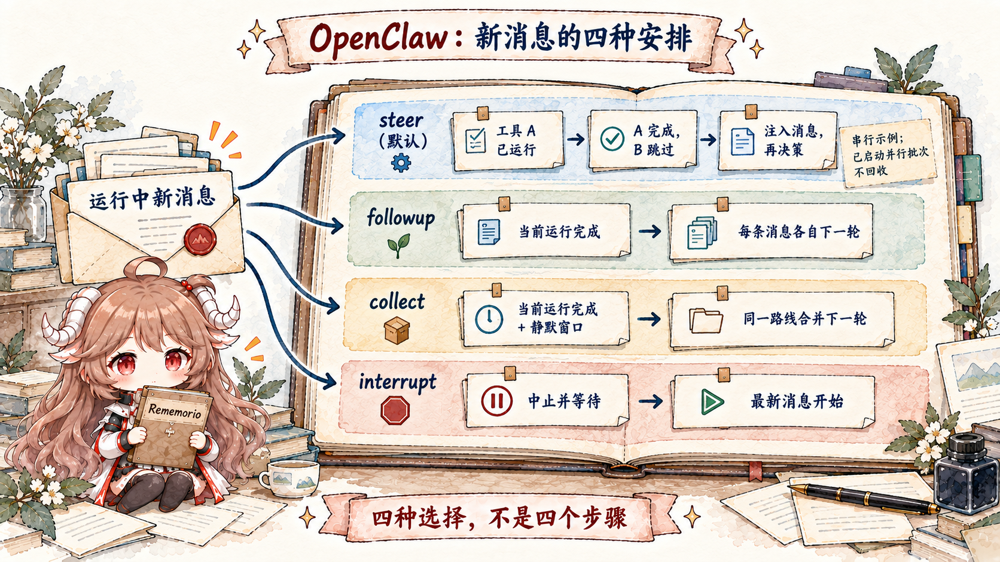
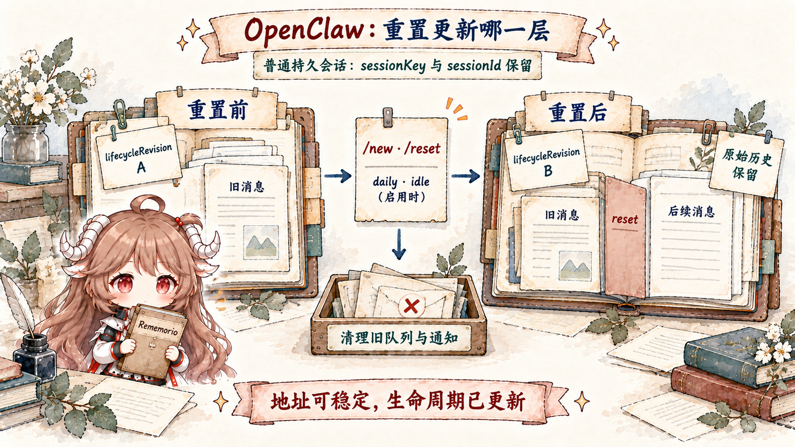

继续用前两篇的现场，但把问题换一下。Alice 先从 Telegram 私聊 Agent，后来又从 Slack 私聊同一个 Agent；她还在一个 Discord 项目群里 @ 它，并在群里开了 thread。如果我们只按“用户显示名 Alice”找历史，会把私人对话、团队群组和 thread 全部混在一起。如果完全按渠道隔离，她换到 Slack 后又像第一次见面。
这不是 prompt 能修好的问题。模型拿到历史以前，runtime 必须先计算一条稳定、可解释、能落盘、能控制并发的状态地址。OpenClaw 把这份结果称为 route，其中最重要的字段是 sessionKey。它既是 session store 的 key，也是 embedded run 的 session lane key。
可是 route 只回答“消息属于哪儿”。当 Alice 在 Agent 跑工具时补一句“别改生成文件”，系统还得判断新消息在时间上属于当前 turn 还是下一 turn。这就是 queue mode 的职责。路由和队列分别控制空间与时间，缺一边都会让 transcript 失去因果顺序。
阅读契约。读完后你应该能区分：binding 决定目标 Agent，DM scope 决定私聊怎样折叠，identityLinks 只规范化已知同一人的 peer identity，sessionKey 是稳定地址，sessionId 标识持久历史，lifecycleRevision 区分当前生命周期，transcript 保存消息与边界事件；还应该能说清 steer、followup、collect、interrupt 对当前运行分别做了什么。
证据边界。本文固定在提交 e6b4264，以 resolve-route.ts、auto-reply queue 源码与官方 Session、Command queue 文档为证。跨会话 memory 检索不改变 session key，本篇不把它当路由；第四篇再讨论。
一、路由怎样选择 Agent 与会话历史
1.1 route 决定处理者与历史，reply target 决定发送位置
消息渠道里的“reply to”回答结果发回哪里，route 则回答由哪个 Agent 处理并写入哪段历史。两者通常相关，却不能合并。Channel docking 可以把当前 direct-chat session 的回复路线移到另一个已链接渠道而不创建新 session；反过来，群组与私聊即使最终都回到同一 app，也应该保持不同历史。
ResolvedAgentRoute 同时返回 agentId、channel、accountId、有效 dmScope/groupScope、sessionKey、mainSessionKey、lastRoutePolicy 与 matchedBy。其中 matchedBy 是非常实用的诊断字段：它告诉你这次选择来自精确 peer、parent peer、wildcard、guild+roles、guild、team、account、channel 还是 default。
因此排查“路由错了”不能只打印最终 agentId。没有 matchedBy，就无法区分配置没有匹配、被更具体 binding 抢先匹配，还是 thread 继承了 parent peer 的 binding。
1.2 binding 先选择 Agent，session policy 再构造 key
binding 是配置层的路由规则。它可以按 channel、account、peer、guild、roles 或 team 把消息送到某个 agent。源码预先把 binding 按 channel/account 建索引，再按优先级寻找 peer、guild+roles、guild、team、account、channel 与 default。这既减少每条消息全表扫描，也把“更具体规则优先”固化为可测试顺序。
匹配得到 agentId 后，buildAgentSessionKey 才把 agent、main key、channel、account、peer kind/id、dmScope、groupScope 与 identityLinks 交给 session-key builder。模型 provider 不在参数里，因为切换模型不应该把同一段对话悄悄变成新会话。
export function buildAgentSessionKey(params: {
agentId: string;
channel: string;
accountId?: string | null;
peer?: RoutePeer | null;
dmScope?: "main" | "per-peer" | "per-channel-peer" | "per-account-channel-peer";
groupScope?: "main" | "per-group";
identityLinks?: Record<string, string[]>;
}): string这套顺序可以迁移到任何多入口 Agent：先用 binding 选择处理消息的 Agent，再用会话策略确定历史地址。把 Agent 选择与会话隔离塞进一个字符串拼接函数，会让权限审计和迁移都变得困难。
1.3 DM scope 把隐私隔离编码进 key
OpenClaw 默认 dmScope: "main"，让所有 DM 渠道折叠到 Agent 的 main session。这对只有一个受信用户的 personal agent 很顺滑：从 Telegram 换到 Slack 仍能接上。但在多人可私聊的 Gateway 上，这个默认会让 Alice 和 Bob 共享 transcript。
| dmScope | 折叠维度 | 适用与风险 |
|---|---|---|
main | 所有 DM → main session | 单用户连续性最好；多用户会泄露彼此上下文。 |
per-peer | 按 canonical peer，跨渠道共享 | 需要可靠 identityLinks；同一人跨渠道连续。 |
per-channel-peer | channel + peer | 多人部署推荐，渠道身份不自动互信。 |
per-account-channel-peer | account + channel + peer | 多账号隔离最强，连续性最少。 |
所以 dmScope 的选择不是“要不要记住我”这么简单，而是“哪些外部身份被允许共同读取一份私人 history”。OpenClaw 的安全审计会检查这类设置，原因就在这里。
1.4 identityLinks 合并身份，但不合并权限
identityLinks 可以把 Telegram 的 alice 与 Slack 的 alice-work 映射到 canonical peer，从而在 per-peer 策略下共享 session。它是显式配置的身份规范化桥，不是模糊匹配，也不应该根据显示名自动合并。
链接身份也不等于链接所有会话。群组、room、channel 默认按 groupScope: "per-group" 隔离；显式设为 main 才会进入所选 Agent 的主会话，这与 identityLinks 无关。跨会话 rememberAcrossConversations 只是把其他私人 transcript 的相关片段作为检索材料，不会修改 key，也不会把历史合并。身份、会话和检索是三个层级。
匹配到的 binding 可以覆盖全局 groupScope。例如只把 Alice 所在的受信团队频道接到主会话，而其他房间仍隔离：
{
"session": { "groupScope": "per-group" },
"bindings": [{
"agentId": "assistant",
"match": { "channel": "slack", "peer": { "kind": "channel", "id": "C0123TEAM" } },
"session": { "groupScope": "main" }
}]
}这个配置片段假定已有 assistant Agent。它改变基础历史地址，不改变 mention gating 或源房间的 reply target；渠道自己的 thread 分流仍需单独核实。key builder 先处理 direct peer，再处理 groupScope，因此不能靠该设置改变 DM 策略。将房间接入 main 也可能让群组消息与默认 main DM 共享历史，只有信任范围一致时才适合这样配置。
1.5 thread 同时参与路由与 binding 继承
thread 不能只当消息 metadata。Discord、Slack 等平台里，同一群组下不同 thread 往往对应不同任务，必须有独立 session。与此同时，thread 可能需要继承 parent peer 的 Agent binding，所以 ResolveAgentRouteInput 同时带 peer 与 parentPeer。
源码的 matchedBy 为 binding.peer.parent 保留独立结果，正是为了让这种继承可观察。否则同一个 Agent 被选中时，你无法知道是 thread 自己有规则，还是继承了父会话。继承规则应参与诊断输出，而不能只藏在 fallback 分支里。
1.6 地址、历史身份与生命周期版本分开
sessionKey 是路由得到的 store/concurrency address；sessionId 关联 transcript；lifecycleRevision 区分同一地址当前处于哪一次生命周期。三者不能简化成“reset 必换 sessionId”。当前初始化实现让普通持久会话在 /new、/reset 或已启用的 daily/idle reset 后保留原 sessionId，以保持历史游标连续性；ACP reset 与 tombstone parent-fork 重启则会生成新 ID。
稳定地址让渠道继续找到对话，稳定历史身份让旧消息仍可查询，而新的生命周期版本区分 reset 前后的运行状态。这里的 lifecycleRevision 是生命周期并发检查字段，不应直接等同于 transcript generation。
二、队列怎样安排当前运行与后续消息
2.1 steer、followup、collect、interrupt 的四种选择

当 session 没有 active run，新消息可以直接开始。当已有 run 时，四种 mode 不是不同性能参数，而是不同因果语义：
- steer：默认模式。已运行的工具不被 steer 取消；内建循环可以跳过尚未启动的串行尾部工具，再在下一次模型调用前注入 pending messages。已启动并行批次的边界见下节；runtime 不支持 steering 时退化为 followup。
- followup：不改变当前 run，把每条消息排成之后的独立 Agent turn。
- collect：同样不 steer，但在 quiet window 内把同 route 的多条消息合成一个 followup；若目标 channel/thread 不同，就分开 drain，保留投递归属。
- interrupt：abort 当前 session run，然后让最新消息开始。它适合“停下，方向错了”，而不是普通补充信息。
resolveQueueSettingsCore 的优先级也体现了 session 语义：inline → sessionEntry 持久 override → channel config → global config → 默认 steer。用户对当前 session 的明确选择高于部署默认。
2.2 steer 等待安全的工具交接点
假设 assistant 提议串行执行工具 A“检查构建产物”和 B“删除旧文件”。A 已经运行时，用户补充“先别删除”。新消息不能改写 A 已发出的参数，但内建循环的启动前检查可以在 A 完成后跳过尚未启动的 B。B 仍获得配对结果：status: "skipped"、deniedReason: "steering"，而不是伪装成执行成功；随后用户消息进入下一次模型决策。
如果 A、B 已作为并行批次跨过启动检查，两者继续完成，steer 不会回收已发生的副作用。因而边界是“已运行调用完成，未启动串行尾部可跳过”，不是“一律等完整工具列表执行完”。不同 runtime 的合同也不同：原生 Codex harness 在静默窗口后调用 turn/steer，由上游在下一模型边界接收，不能把内建循环的逐工具检查套过去。需要显式停止当前 run 时用 interrupt；中止也不意味着回滚外部副作用。
2.3 session lane 与 global lane 限制不同冲突
每个 embedded run 先进入 session:<key> lane，保证同一会话最多一个 active run；随后进入 global main lane，用 agents.defaults.maxConcurrent 限制跨 session 并发。把两层合成一个全局 mutex 会让 Alice 的长任务阻塞所有人；只做全局 cap 则允许同一 transcript 的两个 writer 并发。
queue mode 决定“忙碌 session 的新消息怎么办”，lane 决定“哪些 run 可以同时执行”。它们不能互相替代。collect 仍需 session lane；maxConcurrent=1 也不自动等于 steer，因为它只让第二个 run 等待，并没有把消息注入当前 runtime。
2.4 排队消息也要保存请求者与取消标识
followup/collect 内容还没成为 active run 时，不能只存在一个匿名数组里。Gateway 为每个 client runId 保留 cancel identity，直到内容执行、丢弃或被 overflow summary 吸收。chat.abort 带 runId 时能取消指定 queued turn；按 session abort 时则先取消获准的 queued work，再处理 active run，避免 queue drain 在停止过程中又提升一项工作。
这揭示一条经常被忽略的规则：等待执行的消息也必须记录谁提交、属于哪个 session。否则多用户 session 无法安全地只取消某个请求者自己的任务。
三、会话滚动后怎样保护历史与异步结果
3.1 重置追加边界，并清理旧生命周期状态

SessionEntry 用不同时间戳服务不同策略：sessionStartedAt 标记当前生命周期何时开始，daily reset 看它；lastInteractionAt 只由真实 user/channel interaction 推进，idle reset 看它；updatedAt 表示 store row 最近一次变化，heartbeat、cron 或 bookkeeping 也可能更新，不能拿它延长会话寿命。daily/idle 是显式启用的策略，不能把图中可选触发理解为每个会话都会定期重置。
这条普通持久会话初始化路径不归档旧 transcript，而是在同一历史中追加 reset 边界：手动 /new//reset 使用 context: "clear"，自动到期使用 preserve-tail。后者可保留近期对话尾部，原始历史与本轮模型窗口因此是两回事。边界追加与 session entry 更新在事务内提交，旧消息仍可搜索。
显式 reset 在提交前停止子任务时，清理守卫同时检查 sessionId 与 lifecycleRevision，避免清理已经换代的会话。提交后再尽力清理旧 queued followup、system event 与 active-run registry；此时清理异常会记录日志，不把已持久提交的 reset 重新判为失败。排查异步结果时不能只问 key 是否相同，也不能假定普通 reset 必然生成不同 sessionId。
incognito 是另一种 storage mode：session row、transcript 与 compaction state 只在进程内，Gateway 重启后消失，不写磁盘 transcript。它不限制工具写文件，也不阻止 model provider 处理消息，所以“无 session 落盘”不等于“无外部副作用”或“端到端隐私模式”。
3.2 transcript 按真实顺序追加消息与工具结果
路由与队列最终保护的是 transcript 的先后关系。用户消息、assistant tool call、tool result、steering message 和最终回答必须按发生顺序持久化；reset 与 compaction 边界会改变重放窗口，repair 另有结构修复职责；同一 session 的写入仍然串行执行。
因此不要让 channel plugin 各自 append 自定义 JSONL，也不要让两个运行同时把“最后一条消息”当作自己的 parent。当前 OpenClaw 把 runtime session row 与热 transcript 存入每 Agent 的 openclaw-agent.sqlite，旧 JSON/JSONL 是迁移来源或归档形态，不是新运行状态的并行真相。
3.3 按路由、队列和生命周期三层排查
| 症状 | 先查什么 | 不要先改什么 |
|---|---|---|
| 同一个用户“失忆” | route inputs、matchedBy、dmScope、identityLinks、sessionKey。 | 不要先加 memory 或扩大 prompt。 |
| 不同用户看到同一历史 | 多人 DM 是否仍用 main，binding/identityLinks 是否误合并。 | 不要靠 system prompt 要模型保密。 |
| 补充信息没有影响当前工具 | queue mode、tool boundary、runtime 是否接受 steer。 | 不要假设 steer 会取消 in-flight tool。 |
| reset 后收到旧任务结果 | sessionId、lifecycleRevision 与 reset 清理是否对应当前生命周期。 | 不要只按 sessionKey 投递。 |
| 所有聊天互相阻塞 | global maxConcurrent 与 lane 配置。 | 不要取消 session serialization。 |
四、六条可以迁移的路由与会话规则
- 路由决定空间归属，队列决定时间归属。二者共同定义 transcript 因果顺序。
- 选择 Agent 与构造 session key 分层。binding 选择处理者，dmScope、groupScope 与 identityLinks 决定会话隔离。
- 隐私必须编码进 key。模型提示不能补救错误的多人 DM 合并。
- 稳定地址、历史身份与生命周期分开。reset 可以保留 sessionKey/sessionId，同时更新生命周期版本与模型窗口。
- steer 在安全 runtime boundary 注入。补充消息不能重写已经发出的工具副作用。
- 排队项也要保存来源。取消、drop 与 overflow summary 都要保留 requester/run identity。
下一篇进入 session 内部，拆开 workspace、bootstrap、system prompt、history、compaction 和 memory。那时会看到：路由保证“哪段历史属于你”，上下文引擎还要决定“这段历史里哪些材料在本轮真的给模型看”。
参考源码与文档
- resolve-route.ts：binding 匹配、route result、session key 构造。
- session-key.ts：Agent session key 解析、主会话与特殊 key。
- queue/settings.ts：queue mode、debounce、cap、drop 优先级。
- get-reply-run-admission.ts：active run、steer/followup 与 interrupt admission。
- Session management、Command queue、Steering queue：官方语义。